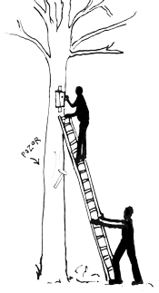

Budky čistíme každý rok od října do března, kdy už mláďata vylétla a ptáci nehnízdí. Ve starém hnízdě zůstává spousta parazitů, a když ho nevyhodíme, hnízdí se v budce příští rok mnohem hůř. Za pár let by se do ní nové hnízdo ani nevešlo.
Co s sebou
- Žebřík, ideálně skládací, a aspoň jednoho parťáka, který ho podrží.
- Pracovní rukavice.
- Telefon s odkazem na obchůzku. Otevři ho ještě doma: budky, mapa i nápověda se stáhnou do telefonu a pak fungují i bez signálu.
- Lékárničku.
- Na drobné opravy se hodí šroubovák, kleště, pár hřebíků a drát.
Bezpečně

- Žebřík opřený o strom drží jeden až dva lidé, třetí leze nahoru.
- Zdraví je důležitější než budka. Ať spadne raději budka než člověk ze žebříku, ale ať budka ani kladivo nespadnou na ty, kdo drží žebřík.
- Když kolem otvoru létají vosy nebo sršni, budku neotvírej.
- Kam bezpečně nedosáhneš, tam nelez. V kontrole vyber, že se budka nevyčistila, a jako důvod „moc vysoko“.
Postup
- Najdi budku. Mapa v odkazu ukazuje tvoji polohu a seznam umí řadit podle vzdálenosti, takže nejbližší budku ke kontrole máš nahoře. Ke každé budce je i odkaz do Mapy.com. Na místě zkontroluj označení na budce.
- Otevři ji. Většinou se vyklápí přední stěna, kterou drží zavřenou obrtlík, u větších budek se sundává střecha. Víc v nápovědě Otevírání budky.
- Podívej se, co v ní je, než to vyhodíš. Hnízdo, vejce, trus nebo zbytky ti řeknou, kdo v budce bydlel. Pomůže nápověda Co v budce bydlelo?
- Vyhoď staré hnízdo celé, i s trusem a zbytky. U přední stěny ho stačí ze žebříku vyhodit dolů.
- Zkontroluj, v jakém je stavu. Drží střecha, stěny i obrtlík? Není rozklovaný otvor? Drobnosti oprav hned. Co spravit nejde, zapiš, viz Kdy budka potřebuje opravu.
- Zavři ji a zajisti obrtlíkem, aby se sama neotevřela.
- Zapiš kontrolu hned u budky. Uloží se do telefonu a odešle se, až bude signál.
Některé budky se nečistí: když v nich někdo zrovna bydlí, nebo jde o netopýrník. Víc v nápovědě Kdy budku nečistit.
Po čištění si umyj ruce, ve starých hnízdech je hodně parazitů a prachu.